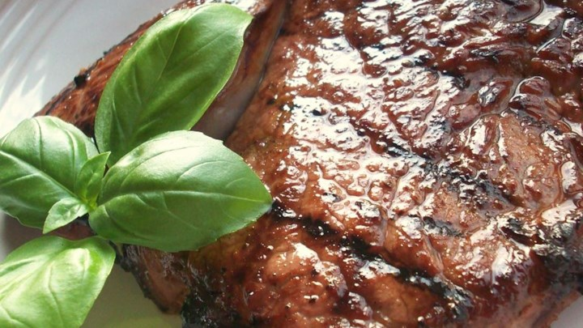

Savory Garlic Marinated Steaks

Ingredients
- 1/2 cup balsamic vinegar
- 1/4 cup soy sauce
- 3 tablespoons minced garlic
- 2 tablespoons honey
- 2 tablespoons olive oil
- 2 teaspoons ground black pepper
- 1 teaspoon Worcestershire sauce
- 1 teaspoon onion powder
- 1/2 teaspoon salt
- 1/2 teaspoon liquid smoke flavoring
- 1 pinch cayenne pepper
- 2 (1/2 pound) rib-eye steaks
Directions
- In a medium bowl, mix the vinegar, soy sauce, garlic, honey, olive oil, ground black pepper, Worcestershire sauce, onion powder, salt, liquid smoke, and cayenne pepper.
- Place steaks in a shallow glass dish with the marinade, and turn to coat. For optimum flavor, rub the liquid into the meat. Cover, and marinate in the refrigerator for 1 to 2 days.
- Preheat grill for medium-high to high heat.
- Lightly oil the grill grate. Grill steaks 7 minutes per side, or to desired doneness. Discard leftover marinade.